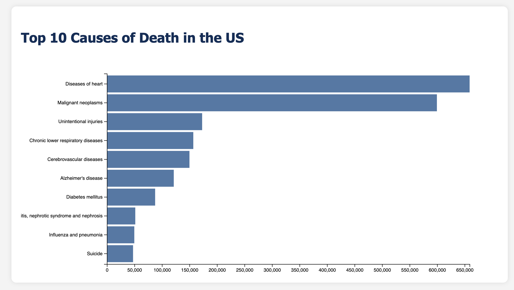
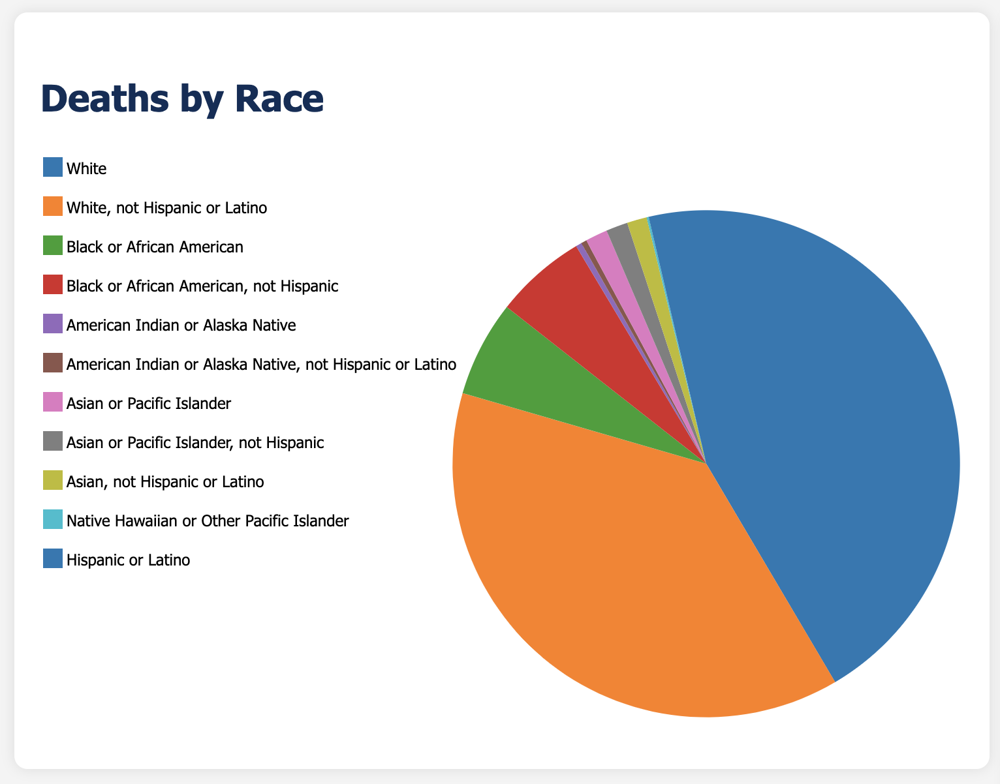
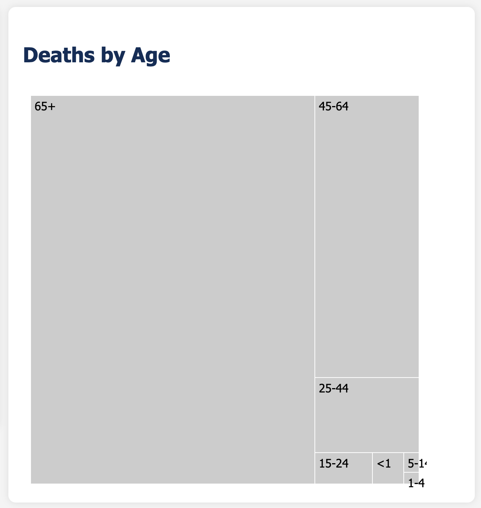

Demo Video
Visualization explanation
These are screenshots of our final visualizations when our webpage is opened:
  
When the user highlights a bar (or bars) from the bar chart (one of the causes of death), it highlights to be red, and the pie chart and treemap adjust to show just that cause of death's race and age statistics. We chose to have our bar chart and the treemap all in one color so that the user isn't overwhlemed by irrelevant channels. The pie chart uses multiple colors so that each piece is distinguishable from the others.
Data Analysis
The data that we used was the number of deaths in the top 10 causes of death in each age group and race in the US from 2019. The data was found on the CDC website (pdfs linked at the bottom of this page) and was initially stored in Excel sheets. It also initially contained death counts based on gender and some other fields, but in preprocessing, we filtered it down to just what we decided was relevant to our project. This data is relevant because it directly answers our question of how people are dying, and how many people of different populations (age-wise and race-wise) are dying, as well as time-appropriate, since 2019 was the last non-COVID-affected year in modern times. In data preprocessing, we took the Excel sheets and deleted the non-relevant fields, then uploaded those new sheets into our project. We then converted the data points into json formatting so that we could use it easily in our visualizations. It is all quantitative data types because it is numbers of deaths in the US population. All of the data (in both the json and CVC formats) can be found in the data folder of this project on GitHub!
Task Analysis
On our task table, our tasks were to:
- Explore the prevalence of certain health conditions over time in the US
- Explore the influence of several demographic factors—socioeconomic, age, race—on these health conditions
- Explore health trends as they relate to location (urban vs. rural, regions)
- Investigate US health policies’ effects on these health conditions
Design Process
We started off by sketching some ideas of what we could do for the project. Then, we adapted our initial sketches into our final sketches and our final sketches into our final visualization on this website. As we progressed through each stage, we tried to balance what was realistic to create and what was interesting for the user to learn about. We especially focused on our use of color, as we discussed in class, and on how to make sure the focus when looking at our visualizations is what we wanted it to be by effective use of marks and channels, and how understandable the content was.
These are our initial sketches:

These are our final sketches:


Conclusion
The final result of our project is a web page that has a bar graph that displays the top 10 causes of death in the US, a pie chart that shows the race breakdown of those deaths, and a treemap that shows the age breakdown of those deaths. When a cause of death (or multiple causes of death) in the bar chart is highlighted, the pie chart and tree map update to show the statistics of those deaths. This visualization effectively explores what causes deaths in the US and how these causes affect different populations differently. The webpage also has a writeup describing the steps of the project and other information on it. In the future, one area of improvement could be attempting to be more creative with our project; because of the quick turnaround time, we were hustling to get everything done, but with more time, we could definitely create a more original project that focuses on more aspects, like what was in the rest of our task table above. This project has been exciting and engaging for our team to work on as a group, and we hope that the user has a meaningful experience looking at our visualizations!
Acknowledgments
We used these sources to help with our project:
- CDC data on deaths by age
- CDC data on deaths by race
- D3 Gallery
- D3: Data-Driven Documents by Mike Bostock.
- Pure CSS responsive "Fork me on GitHub" ribbon by Chris Heilmann.
- Creating bar charts using D3.js
- Using dispatchers in D3.js for managing events
- SVG manipulation in D3.js
- Understanding drag behavior and how to handle drag and drop using D3.js